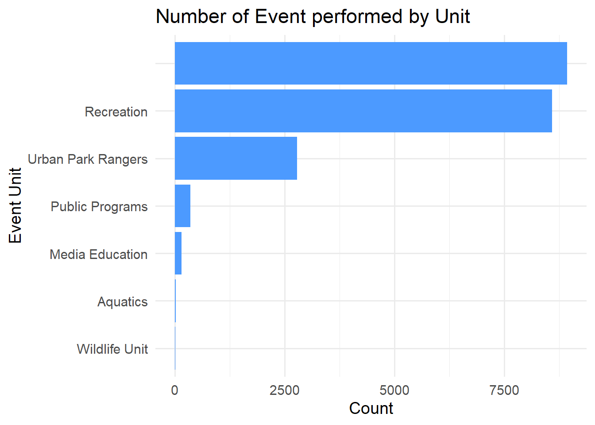

Then we started to search the relavant data source from NYC Open Data and we found Parks Special Events published by Department of Parks and Recreation (DPR). This data set is provided in CSV and updated monthly, but the data may change weekly. Also data is published with a one month delay.
Unit Group.Name.Partner Date.and.Time
1 Urban Park Rangers Urban Park Rangers 10/12/2019 11:00:00 AM
2 Urban Park Rangers Greenbelt Conservancy 11/20/2019 06:00:00 PM
3 Urban Park Rangers Greenbelt Nature Center 12/19/2019 06:00:00 PM
4 Urban Park Rangers Greenbelt 01/15/2020 06:00:00 PM
5 Urban Park Rangers Greenbelt Nature Center 01/19/2020 11:00:00 AM
6 Urban Park Rangers Greenbelt Conservancy 02/19/2020 06:00:00 PM
Borough LocationType Location
1 Queens Adventure Course Alley Pond Adventure Course
2 Staten Island Nature Center Greenbelt Nature Center
3 Staten Island Nature Center Greenbelt Nature Center
4 Staten Island Nature Center Greenbelt Nature Center
5 Staten Island Nature Center Greenbelt Nature Center
6 Staten Island Nature Center Greenbelt Nature Center
Event.Name Event.Type Category
1 PEP Family and Friends Agency Produced Event Nature
2 Family Science Night Local Event Nature
3 Family science night Community Based Event Academic/Out of School time
4 Family Science Night Agency Produced Event Academic/Out of School time
5 Winter Wilderness Skills Local Event Nature
6 Family Science Night Community Based Event Academic/Out of School time
Classification Attendance
1 75
2 30
3 9
4 30
5 62
6 30
Audience Source
1 Children;#Young Adult;#Adults;#Teens;#Tot Sharepoint
2 General Public Sharepoint
3 Children;#Adults;#Teens Sharepoint
4 Children;#Adults;#Teens Sharepoint
5 Children;#Young Adult;#Adults;#Teens Sharepoint
6 Children;#Young Adult;#Teens;#Adults;#General Public Sharepoint
The data set contains 20.8k rows and 13 columns. Its main dimensions include Unit, Date and Time, Borough, LocationType, Location, Event Type, Category, Attendance, Classification, Audience and so on.
2.0.1 2.1 Unit
Code
library(ggplot2)library(dplyr)
Attaching package: 'dplyr'
The following objects are masked from 'package:stats':
filter, lag
The following objects are masked from 'package:base':
intersect, setdiff, setequal, union
Code
df_unit_count <- df |>count(Unit, name="unit_count") |>arrange(unit_count)ggplot(df_unit_count, aes(x=reorder(Unit, unit_count), y=unit_count)) +geom_col(fill ="#4C9AFF") +coord_flip() +labs(title ="Number of Event performed by Unit",x ="Event Unit",y ="Count" ) +theme_minimal(base_size =14)

2.0.2 2.2 Year
Code
library(lubridate)
Attaching package: 'lubridate'
The following objects are masked from 'package:base':
date, intersect, setdiff, union
Code
library(dplyr)df_year_count <- df |>mutate(year =year(mdy_hms(Date.and.Time))) |>count(year, name ="year_count") |>arrange(year_count)df_year_count
The 2002 in the table is obviously caused by input misplacement, because the table was established and recorded in 2018. It is unreasonable to record only 2002 and not the more than ten years in between.
Code
df_year_count <- df_year_count |>filter(year !=2002)ggplot(df_year_count, aes(x=year, y=year_count)) +geom_col(fill ="#4C9AFF") +labs(title ="Number of Events per Year", x ="Year", y ="Count") +theme_minimal(base_size =14)